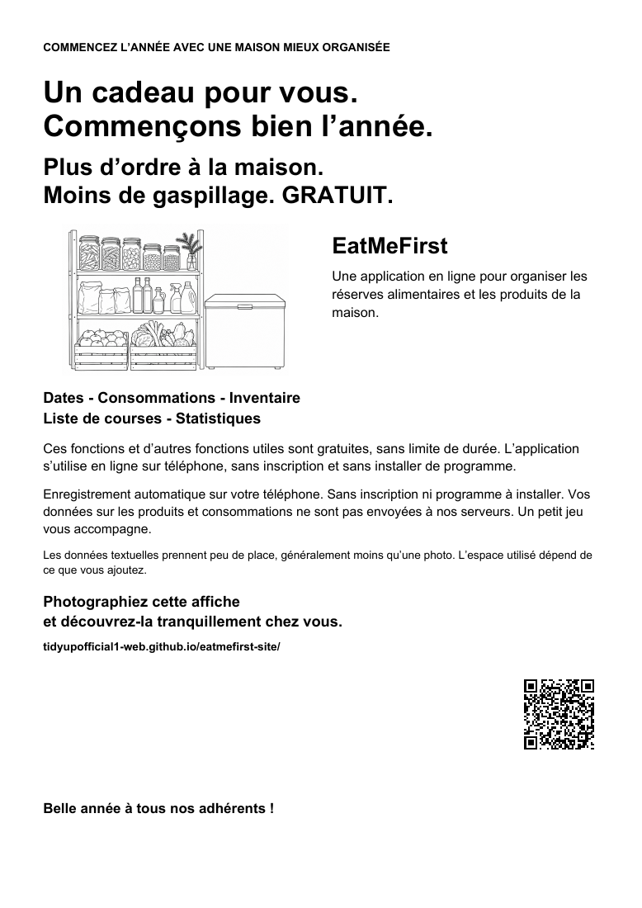
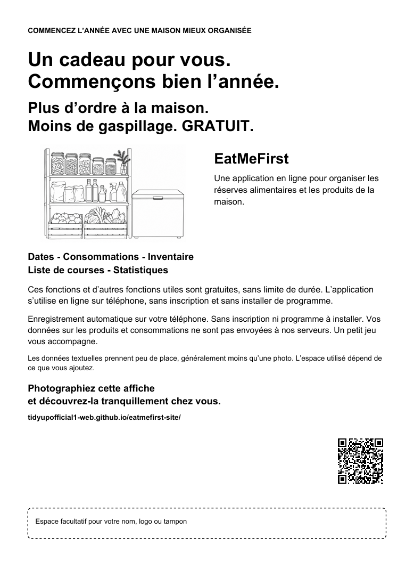
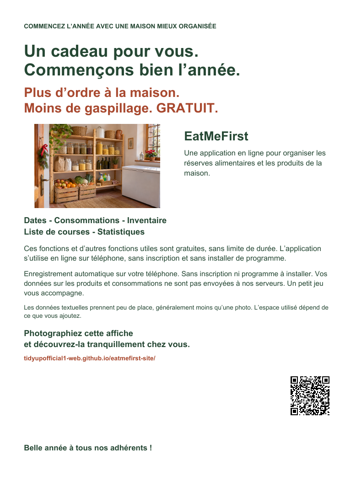

Un message de début d’année prêt à partager.
La photo et le dessin montrent des réserves à la maison, des cagettes de fruits et un congélateur coffre. Imprimez une affiche pour le point de retrait ou partagez une image sur votre site.
Télécharger le PDF A4 de quatre pagesCe PDF contient les quatre versions. Sélectionnez uniquement la page souhaitée lors de l’impression.

Noir et blanc - espace logo
Télécharger cette image
Couleur - sans logo
Télécharger cette imageCouleur - espace logo
Télécharger cette imageUn message pour vos adhérents
Télécharger le texteCette page n’envoie aucun message. Vous choisissez le canal et les destinataires.
Commencez sur votre téléphone
EatMeFirst se lit facilement sur l’écran du téléphone. L’appareil photo permet de scanner les codes-barres pendant que vous rangez vos achats. L’application fonctionne aussi sur PC, où vous pouvez saisir les produits manuellement, même sans code-barres.
Vous consultez le site sur ordinateur ? Ouvrez l’appareil photo du téléphone comme pour prendre une photo et visez le code QR. Inutile de prendre la photo : touchez le lien lorsqu’il apparaît. Déjà sur téléphone ? Touchez le lien pour ouvrir le site.